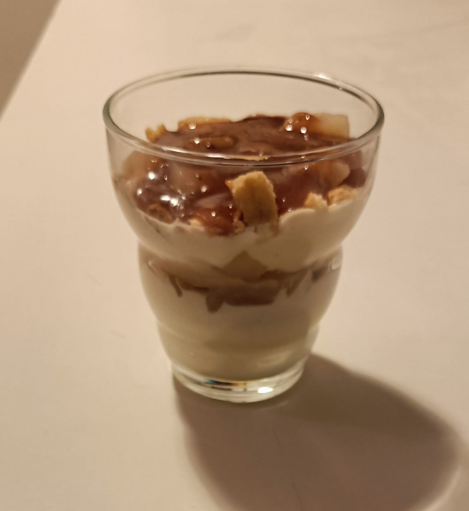

Mettre les pommes dans une casserole avec un fond d'eau
Ajouter le sucre(1) et faire cuire jusqu'a ce qu'elle soit bien cuite
Une fois bien cuite versez dans votre plat et écraser les avec une fourchette pour éviter
les
morceaux
rajouter de la canelle et mélanger
Pendans la cuisson des pommes ou après, mettre farine, sucre(2) et beurre dans une poële et
mélanger jusqu'a ce que la pate forme des petit bout
Faire cuire a feu moyen / fort et mélanger régulièrement jusqu'a ce qu'il dort légèrement
Une fois dorrer rajouter le dans votre plat sur votre compote
Pour les gourmand déguster tant que c'est chaud même si je conseille d'attendre 1h ou 2h que
la
pate a crumble durcisse bien
Note et commentaire
La canelle se met a volonté, pas vraiment de dosage, on peut même en mettre un peu dans la
pate
a crumble
on peux rajouter un peu de beurre fondu sur le dessus du dessert une fois fini pour qu'il
fasse
de plus gros morceaux
Dessert préféré avecle mille-feuille
En image :
Mochis au lait
Ingredient
100ml de lait
100g de farine de riz gluant
30g de sucre
20g de beurre
20g de fécule de maïs
Recette
Tout mettre, exépter le beurre dans un saladier et mélanger
Mettre au micro-onde 4 à 5min en regardant toutes les 1 à 2 minutes
Mélanger à nouveau et incorporer le beurre
Etaler la pâte et bien la malaxer
Faire des petite boule et les étaler sur la table soupoudrer de fécule de maïs avant (la
face
avec fécule sera la face extéérieur du mochis)
mettre au centre la gaarniture de votre choix et refermer
Pour éviter qu'il colle rajouter un peu de fécule de maïs sur les petites boules que forment
les
mochis
Note et commentaire
éviter des garniture trop liquide, style confiture qui rend le mochis dur a fermer
Conseil de dégustation : a manger dans la journée sinon sèche (a voir si on trouve une
technique
pour mieu les conserver)
Excellent a la pate a tartiner !
En image :
Verine Tiramissu aux fruit (x6)
Ingredient
Boite de fruit au sirop
2 oeufs
Environ 42g de sucre
250g de Mascarponne
pincée de sel
(sucre vanillé)
Biscuit breton
Recette
Séparer les blancs des jaunes.
Battre les blancs avec une pincée de sel jusqu'à ce qu'il soient très ferme. Rajouter le sucre
et battre le tout jusqu'à obtenir une meringue brillante.
Dans un saladier, verser le mascarpone, le sucre vanillé et les jaunes d'oeufs : battre le tout
avec un fouet.
Rajouter dans ce saladier la meringue et bien mélanger.
Emiétter les palets. Couper les poires en petits morceaux.
Faire le caramel liquide :
du sucre et du lait (pour un caramel mou et collant) dans les proportions que vous voulez
Remplir les verrines de la façon suivante : mascarpone - biscuit - fruit - caramel et réitérer
la même chose jusqu'en haut de la verrine.
Note et commentaire
Si vous voulez moins de verrine il faut mettre moins de mascarponne
Excellent, si pas assez de fruit au sirop on peut rajouter une pomme ou n'importe quel fruit qui
s'adapterai bien selon vous
4.5/5
En image :

Samossa a la banane
Ingredient
Recette
Note et commentaire
En image :
Pate a crêpes
Ingredient
Recette
Note et commentaire
En image :
Cidre
Ingredient
Epluchure de pomme et trognon (de 4 pommes)
1 Litre d'eau
1 demie citron
20g de sucre
Recette
Mettre l'eau dans une casserole avec les epluchures de pommes
Faire chauffer a deux doux une dizaine de minutes
Rajouter le sucre et le demie citron
Laisser encore 10 minutes ou jusqu'a ce que la peau des pommes change de couleurs
Note et commentaire
Si vous voulez un jus de pomme, vous pouvez le déguster quand vous voulez (1semaine max)
Qi vous souhaitez un petit cidre, rajouter environ 10g de sucre avant de le mettre dans une
bouteille en verre, ni touchez plus pendant 1 semaine et déguster